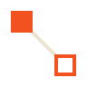

SALAS DE VOZ
CANAIS
AO VIVO NESTA SALA
NINGUÉM ESTÁ MOSTRANDO NADA

SEELE voz, vídeo e texto auto-hospedadosSua chave mora neste navegador, neste aparelho. Apagar os dados do site apaga a chave junto.
Hospedagem / Seus servidores
Hospedagem / Preparar
Hospedagem / Conferir antes de iniciar
Nada nesta tela apaga conversa, canal ou dado de MOD.
Fila vazia.
Sem decisões.
ATÉ A SESSÃO SER ENCERRADA
Sessão mantida em memória local. Áudio suspenso.
TENTATIVAS DE RECONEXÃO
reconectando…
NINGUÉM ESTÁ MOSTRANDO NADA
——
SERVIDOR
O link de convite deste servidor e até onde ele chega. Ele aparece uma vez quando a rede sobe, e mora aqui depois disso.
Escolha quem entra: senha, convite de uso único ou aprovação na portaria.
—
Sons curtos para ligação, sala, conexão, porta e mensagens. Valem só neste aparelho.
Quando alguém chama você, bate à porta do servidor que você hospeda ou liga para você. A notificação diz o que foi e onde, e nunca o texto de uma mensagem: ela aparece também na tela bloqueada. Vale só neste aparelho.
Vale numa sala de voz, com o microfone em SEGURAR TECLA. Enquanto vale, a tecla não chega ao outro programa: escolha uma que o jogo não use.
A identidade fica nesta máquina. Perder a chave cria outra identidade; um administrador de cada servidor precisará devolver seus acessos.
Você escolhe quais domínios podem carregar imagens. Ao carregar, o site recebe seu endereço de rede e a hora do acesso.
Nenhum domínio liberado. As imagens aparecem com um botão, e nada é buscado até você clicar nele.
Somente quem hospeda pode alterar os MODs.
Desfazer um sim faz a lista de MODs daquele servidor ser perguntada de novo na próxima entrada.
Revogar desliga o jogo, se ele estiver de pé, e apaga o aceite: o SEELE pergunta de novo no próximo pedido.
Mostra os nomes dos pontos de MOD, só nesta máquina. Os contornos não interferem nos cliques nem no teclado.
Em vez de sempre pelo servidor
Para isso, o seu endereço nesta rede é entregue a quem for te servir — e só a essa pessoa, e só enquanto durar a transmissão. Recusando, a tela vem do servidor, que é o caminho de sempre.
Servir a tela a outra pessoa, no lugar do servidor
Isso gasta a sua internet de subida, e é por isso que a pergunta é separada da de cima.
Cada versão do servidor tem as conversas dela, em separado
Guardar outra versão não substitui a aberta. Ao entrar, o SEELE abre a versão do servidor e baixa se necessário.
As conversas ficam separadas por versão do servidor. Apagar o app não apaga essas conversas.
O SEELE fecha e abre de novo para instalar a atualização. Sua sessão será encerrada. Se você estiver hospedando um servidor, todas as pessoas conectadas também sairão. Avise o grupo antes de continuar.
O pacote é conferido antes da instalação. Se a preparação falhar, esta versão continua disponível.
Você ainda não entrou em nenhum servidor. Cole o endereço ou o link que alguém te mandou.
Agenda vazia.
O SEELE é feito por uma pessoa, sem anúncio, cadastro nem serviço no meio. Se ele é útil para você, dá para pagar um café.
FALTA O MÓDULO DE VÍDEO.
Baixe o módulo de vídeo do Cisco para compartilhar. O download é feito uma vez.
O QUE MOSTRAR
MODs são parte deste servidor. Eles executam código nesta máquina e podem mudar a janela inteira. Leia o que cada um alcança antes de entrar.
Servidor:
Este servidor mudou a lista de MODs desde a última vez que você disse sim. O aceite anterior não autoriza esta lista.
Aceitar vale somente para esta combinação de servidor, MODs e versões. Qualquer mudança pergunta de novo, e o sim pode ser desfeito em CONFIGURAÇÕES.
ATUALIZAÇÃO ·
Servidores de jogo
Não há mais ninguém em sala nenhuma deste servidor.